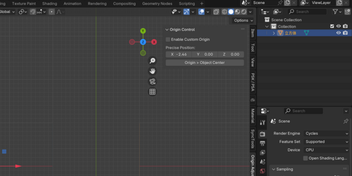
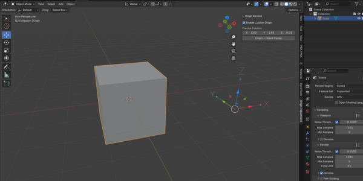
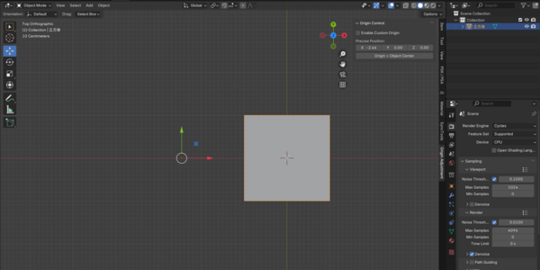
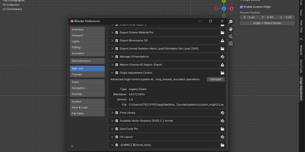
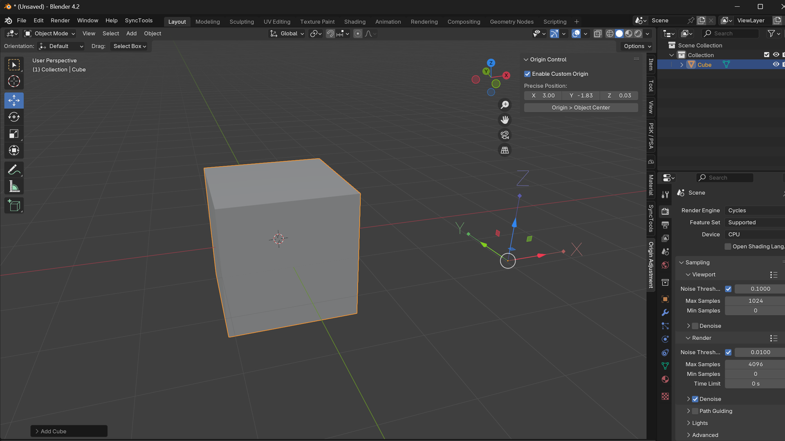
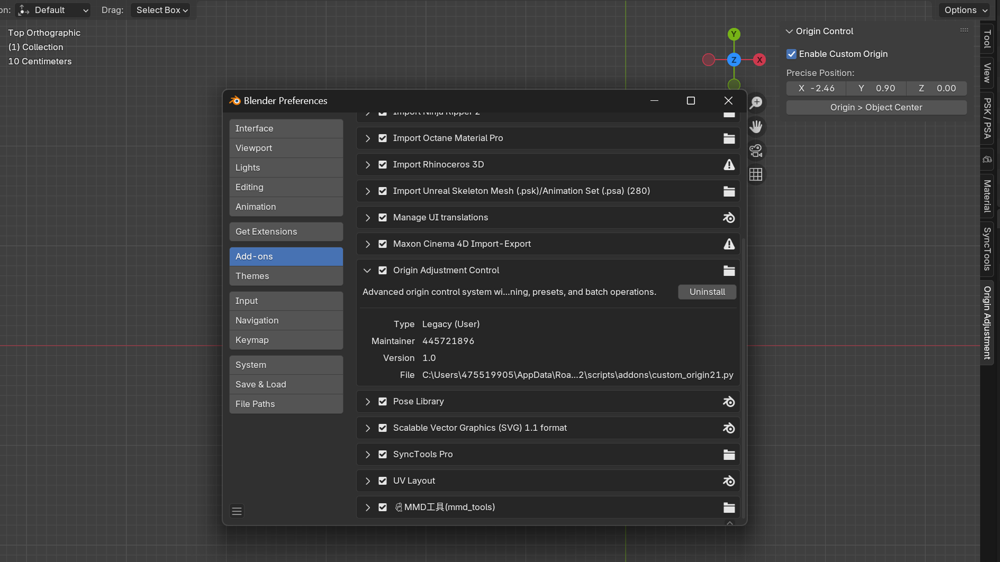
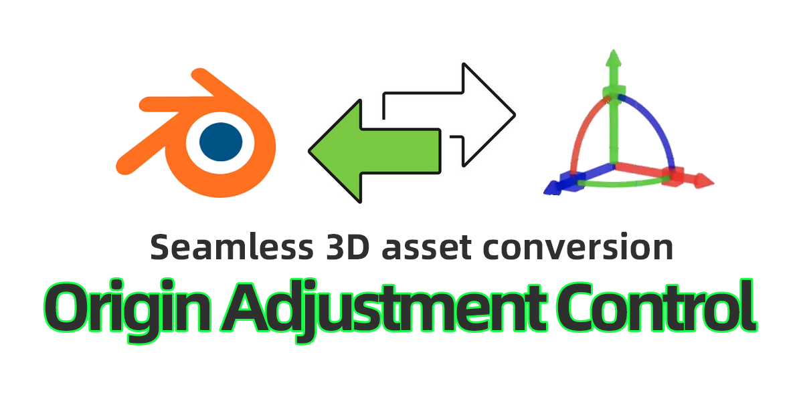

此插件增强了在 Blender 中精确操控对象原点的能力。它支持对齐原点、将原点吸附到曲面、应用变换、管理预设等操作。界面包含模态交互、面板控件，以及 Gizmo 显示和坐标转换等工具增强功能。

get_valid_objects(context)
获取所有类型为 MESH、CURVE、SURFACE 或 FONT 的选中对象，用于原点调整。
apply_origin_transform(obj, new_origin)
在保持几何形状不变的情况下，将对象的原点变换到世界空间中的指定位置。
ADJUST_ORIGIN_OT_modal：通过鼠标移动以交互方式调整对象原点。APPLY_ORIGIN_OT_apply：将原点移至对象的几何中心。
用法：在插件面板中点击"原点到中心"。
ORIGIN_OT_ModeSwitch：在原点控制模式之间切换：世界、局部或自定义参考。
OBJECT_OT_precise_rotation：根据每个轴的输入角度，对对象应用精确的旋转值。
VIEW_3D > 侧边栏 > 原点调整。custom_origin 或 precise_rotation）直接更新原点的位置或旋转。ORIGIN_OT_AddKeyframe 操作符添加关键帧，以记录和动画化原点变换。ORIGIN_OT_SnapToSurface 将原点吸附到最近的曲面点。ORIGIN_OT_CoordinateConverter 操作符支持在世界、局部和自定义空间之间转换坐标，实现灵活的原点控制。ORIGIN_OT_PresetManager）。保存、加载或删除操作管理预设。对选中对象执行批量变换：
(0, 0, 0)。*.py）保存到您的计算机。编辑 > 首选项 > 插件 > 安装。unregister() 函数。
| 工具/功能 | 用法 |
|---|---|
| 调整原点模态 | 使用鼠标进行交互式调整。 |
| 应用原点 | 将原点移动到对象的几何中心。 |
| 坐标转换器 | 切换给定点或对象的坐标空间。 |
| 预设管理 | 保存和加载自定义位置和旋转以供重用。 |
| 原点 Gizmo | 在 3D 视口中进行实时变换的可视化辅助工具。 |
| 关键帧动画 | 记录动画化的原点变换以实现基于时间的效果。 |
| 批量操作 | 对多个对象高效执行原点变换。 |
以下属性已添加到 Scene 对象：
enable_custom_origin：切换自定义原点模式。custom_origin：将当前原点位置存储为 3D 向量。last_origin_location：跟踪上次使用的原点位置以便快速还原。其他属性链接到对象实例，例如用于动画的 origin_keyframes 和用于预设管理的 origin_presets。
REGISTER/UNREGISTER 块的模板结构进行安全的属性管理。
享受对原点的无缝控制，提升您的建模、动画和工作流程精度！
